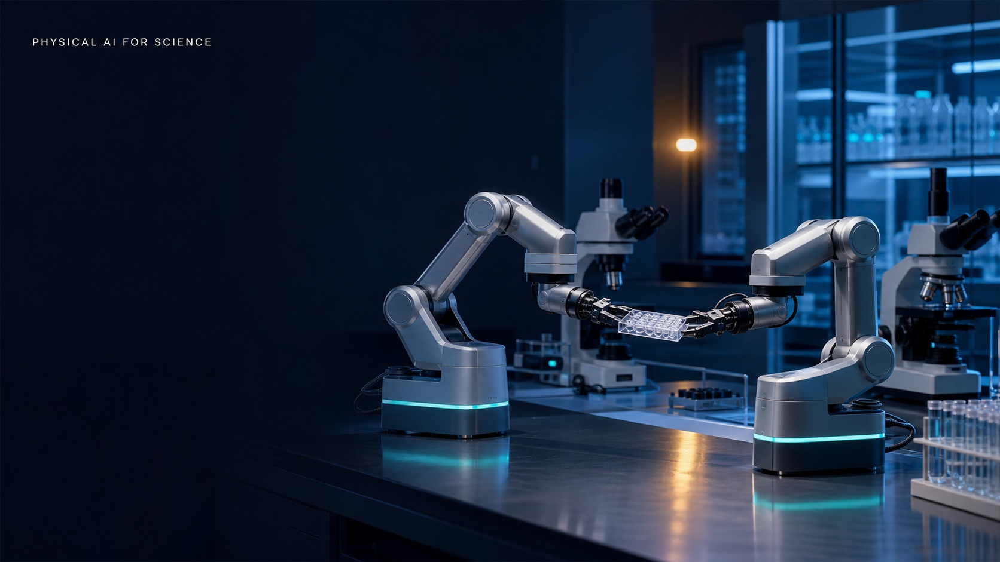

硬件语义层
用设备描述、能力边界和状态模型，让智能体先理解硬件，再请求动作。
QINGLE INTELLIGENCE · PHYSICAL AI LAB
清乐智能以 Physical AI for Science 为技术主线，连接模型、智能体、科学仪器与机器人，构建可验证、可复现、可持续进化的物理智能系统。

01 / OUR THESIS
从数字智能走向物理智能
真正进入科学现场的智能体，需要感知不确定性、调用真实设备、在安全边界内行动，并从每一次实验结果中更新判断。我们的工作，是把这一条闭环变成开放、可组合的工程系统。
02 / REFERENCE ARCHITECTURE
把自然语言任务收敛为可审计、可中断、默认安全的硬件动作。
用设备描述、能力边界和状态模型，让智能体先理解硬件，再请求动作。
编排模型、上下文、工具调用与恢复策略，把一次指令变成完整任务。
把发现、状态、移动和停止暴露为边界清晰、可组合的智能体工具。
承接遥操作、数据采集、策略训练与推理，形成具身学习的数据闭环。
用可替换的设备适配器连接真实机械臂，同时保留仿真与安全降级路径。
03 / OPEN HARDWARE AGENT LAB
我们正在搭建一个面向 LeRobot 与 Seeed reBot 的公开参考项目：从设备发现、状态查询到安全移动与紧急停止，全链路都可以在模拟环境中验证。
$ uv run mcp dev server.py
[discovery] 2 devices available
├─ lerobot-arm READY / SIM
└─ rebot-arm READY / SIM
agent › inspect the workcell, then move to home
tool robot.get_state({ device_id: "rebot-arm" })
tool robot.move_joints({
device_id: "rebot-arm",
positions: [0, -0.4, 0.8, 0, 0.4, 0]
})
✓ policy validated
✓ motion completed in simulation04 / PHYSICAL AI FOR SCIENCE
从假设生成到设备执行，让智能体在受控边界中完成实验循环。
连接样品制备、表征与反馈，加速候选材料的搜索与验证。
记录动作、观测与结果，把每次操作沉淀为可训练、可回放的数据。
让研究者、模型与实验室设备跨空间协同，同时保留人工接管能力。
ENGINEERING PRINCIPLES
默认在模拟设备中完成开发、回归与演示，真实运动必须显式开启。
先发现能力与约束，再生成动作请求；不让模型猜测硬件边界。
关键操作可审批、全链路可观测，任何时刻都能停止并交还控制权。
协议层与设备驱动解耦，让新机械臂和科学仪器可以渐进接入。
05 / ROADMAP
MCP 服务、模拟适配器、安全策略与 DeepSeek Harness 示例。
接入 LeRobot 与 reBot，完成受控遥操作和标准动作验证。
将样品操作、视觉观测与实验记录组合成可复现实验任务。
联合硬件伙伴与研究者，沉淀可移植的 Physical AI 接口与数据。